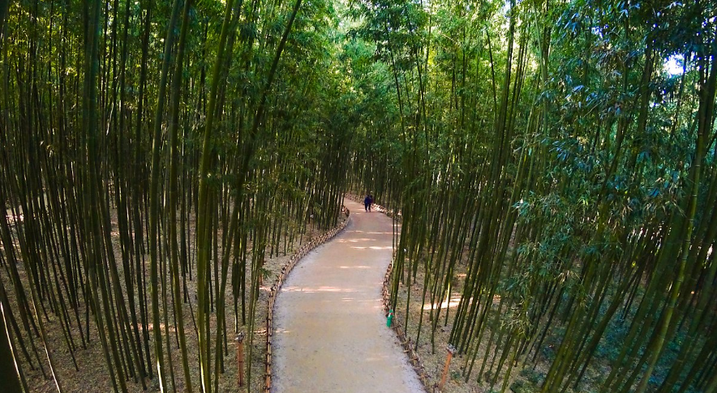
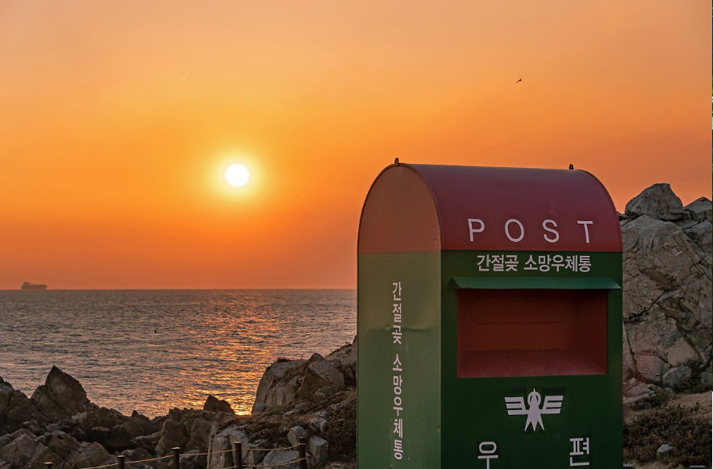

대왕암공원(大王岩公園)은 울산광역시 동구 일산동 해안에 있는 공원이다. 울산의 동쪽 끝 해안을 따라 여러 가지 바위들이 있으며 원래는 울기공원이라 불렸다가 2004년 대왕암공원으로 변경되었다.
추천!

태화강 국가정원
태화강 국가정원은 총 면적이 84ha이며 생태, 대나무, 계절, 수생, 참여, 무궁화라는 6개 주제 아래 29개 세부 정원으로 구성돼 있다. 여름철에는 백로, 겨울철에는 떼까마귀가 찾아들어 장관을 연출하고 대나무숲이 4km에 걸쳐 이어져 청정한 기운을 뿜어낸다.
추천!

간절곶
간절곶(艮絶串)은 대한민국 울산광역시 울주군 서생면 대송리에 위치한 곶이다. 1월 1일에 대한민국의 육지 지역에서 해가 가장 먼저 뜨는 장소들 중 하나이다. 그러나 대한민국의 육지 최동단은 아니다. 우리나라 육지에서 해가 가장 먼저 뜨는 곳으로 매년 새해 해맞이 축제를 개최한다